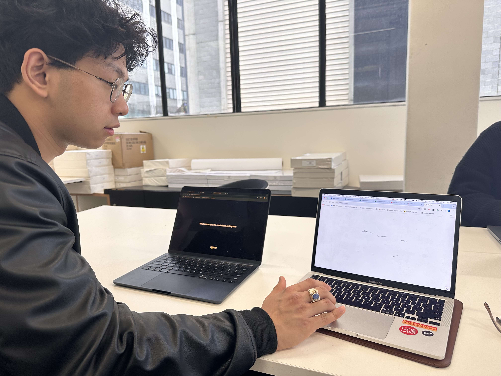
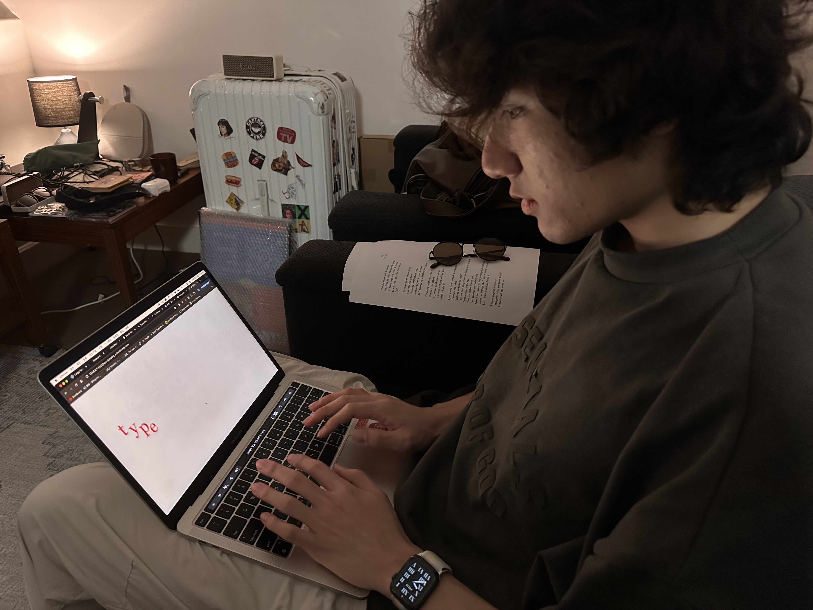
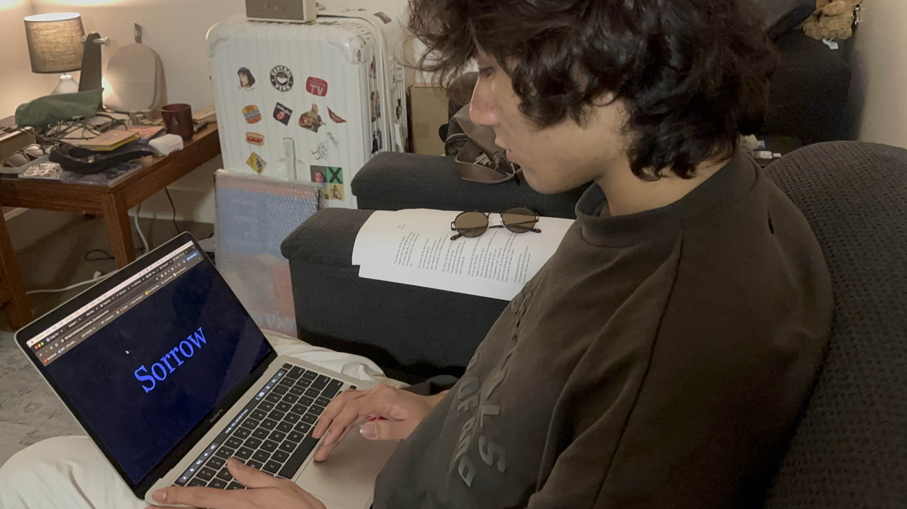

Throughout the development of my final project, the journey has been shaped by constant learning, feedback, and the challenges of creative coding. From discovering bugs through user testing to managing time effectively, each experience has contributed to my growth as both a designer and a coder. This process has shown me the importance of collaboration, self-discipline, and the value of stepping outside my comfort zone to achieve something new.
Receiving constant feedback throughout the creation of my final project has been invaluable. Having others test your work is the easiest way to identify flaws you may not see yourself. For instance, when Alvin tested Nostos 4.0, he discovered a bug I wouldn’t have noticed on my own. When I test my work, I follow a default flow, putting words in blanks in order. However, Alvin dragged the first word to the second blank first, revealing that the linking to the next page didn’t work properly. This kind of feedback is crucial, as it exposes both issues and unexpected highlights in my work. When friends interpret my project, they often explain it in ways I hadn’t considered, which actually helps me better explain it to others.



Maintaining a consistent schedule and planning ahead have been crucial in my time management. Moving forward, I aim to improve this skill, especially with creative coding projects. I’ve learned that starting early is key, and now that I have a better sense of how long these projects take, I feel more capable of estimating time accurately. It's also important to accept that some aspects of the project may need to be let go. As a perfectionist, I realise it’s okay to stop at some point and focus on wrapping up the design process.
This studio ignited my passion for creative coding. Before this experience, I never imagined myself coding, as it seemed impossible and unrelated to my strengths. I didn’t excel in STEM subjects and always doubted my ability to step outside my comfort zone. However, this journey changed my perspective entirely. I ended up creating something I’m genuinely proud of, and it gave me the confidence to believe that I can accomplish anything if I set my mind to it.
A debugging session with Karen Ann was particularly impactful. Her calm, logical approach helped me work through complex coding issues, and now, whenever I face a bug, I think, "What would Karen Ann do?" This mindset has made me more resilient, not just in coding but in life. I’ll carry this lesson forward, staying calm and methodical no matter the challenges I face, confident that I’ll keep moving forward.
Reflecting on this journey, I’ve gained not only technical skills but also a confidence in my ability to tackle creative coding challenges. From the support and insights of peers and mentors to overcoming bugs with patience, each step has reinforced my belief that with the right mindset, anything is achievable. Moving forward, I am excited to continue exploring the intersection of design and technology, knowing that these experiences have equipped me with the resilience and creativity to succeed.